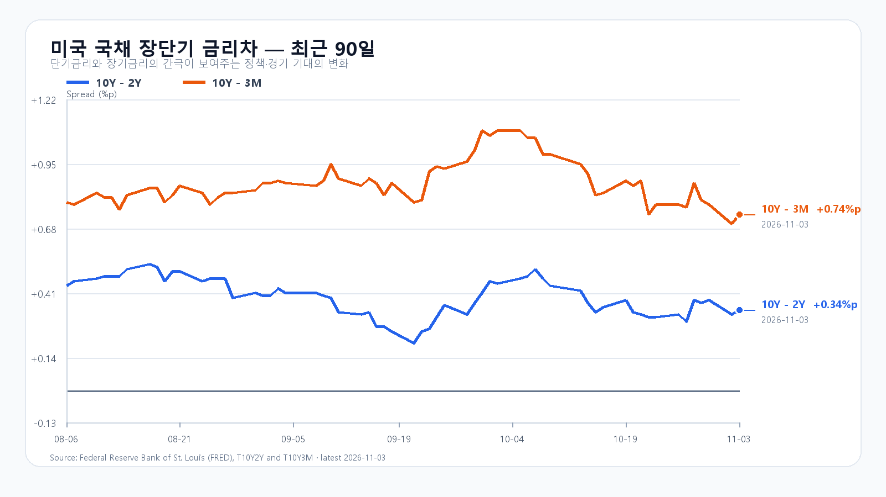
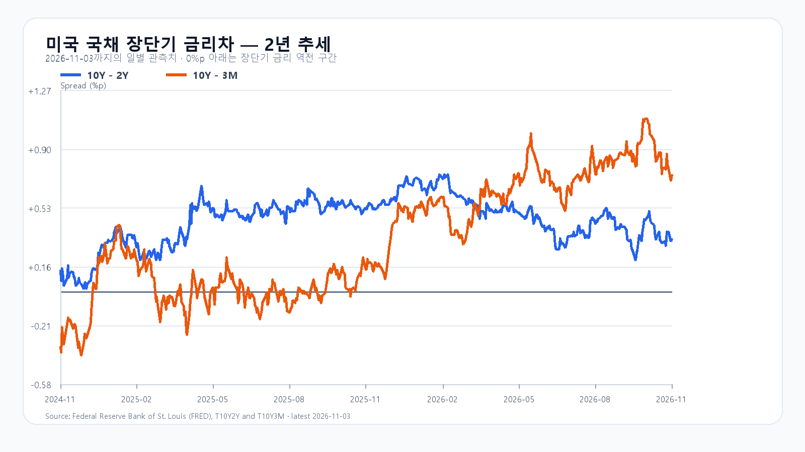

미국 반도체주의 반등에 코스피도 상승 출발했습니다. 전날 3.59% 하락한 뒤 되돌림이 나온 만큼 오늘은 상승률보다 개장 이후의 가격 지지가 중요합니다. 5,800선 안착과 외국인·프로그램 매수의 동행이 반등의 지속성을 가를 조건입니다.
AMD 실적이 반도체 반등에 힘을 보탰다
3일 미국 정규장에서 SOXX는 2.50%, SMH는 2.01% 올랐습니다. Nvidia는 2.29%, Micron은 2.58%, Broadcom은 3.07% 상승했습니다. AMD는 정규장에서 3.65% 오른 뒤 시간외에서도 상승했습니다. 전날 한국장 하락 이후의 미국 반등과 실적 발표는 새 재료입니다. 앞선 Intel 충격을 오늘 하락 요인으로 다시 더할 필요는 없습니다.
AMD의 3분기 매출은 133억7,700만달러로 전년 대비 45% 늘었고 데이터센터 매출은 85억달러로 97% 증가했습니다. 회사는 4분기 매출을 170억달러, 오차 범위 ±3%로 제시했습니다. 서버와 AI 가속기 수요가 매출로 이어지고 있다는 점은 국내 HBM·서버 메모리 수요에도 우호적입니다. 다만 이 실적이 삼성전자나 SK하이닉스의 신규 공급계약 또는 이익률을 확정하지는 않습니다. AMD 실적 · 공시 자료
메모리 수요와 주식 매수는 따로 확인한다
3일 TrendForce 현물 세션에서 DDR5 16Gb 평균은 61.50달러, DDR4 16Gb는 82.719달러로 모두 보합이었습니다. 이 현물가격만으로 HBM과 기업용 SSD의 계약 수요를 판단할 수는 없습니다. 미국 메모리주 반등은 투자심리 회복의 단서이며 국내 반도체의 수급 회복은 별도로 확인해야 합니다. DRAM 현물가격
5,800선 위에서 반등을 유지할 수 있을까
기본 종가 범위는 5,700~5,900으로 확률 50%를 둡니다. 5,900을 넘고 외국인과 프로그램이 함께 순매수하면 5,900 초과~6,050의 강세 시나리오 25%에 무게가 실립니다. 5,700 아래에서 두 수급이 순매도를 이어가면 5,450~5,700 미만의 약세 시나리오 25%를 봅니다. 각 경계선을 반대로 넘으면 해당 판단을 접습니다.
KODEX 레버리지는 73,565원을 당일 첫 지지, 74,000원을 반등 유지 기준, 75,090원을 첫 저항으로 봅니다. 기준선은 오전 초반 관측 범위이며 이후 시세에 따라 저절로 바뀌는 목표가가 아닙니다. 공격 20·관망 50·방어 30으로 두고 상승 출발 뒤 저점을 높이는지 살펴봅니다.
금리와 미국 고용 일정도 남아 있다
3일 미국 10년물과 2년물 금리차는 0.34%포인트, 10년물과 3개월물 차이는 0.74%포인트입니다. 개별 금리는 2일 자료에서 3개월물 4.21%, 2년물 4.59%, 10년물 4.91%였습니다. 서로 기준일이 다릅니다. 장단기 금리차가 벌어졌다는 이유만으로 성장주의 할인율 부담이 줄었다고 보기는 어렵습니다. 미국 고용보고서는 6일 오후 10시 30분 한국시간에 예정돼 있습니다. 중간선거 결과와 정책 변화도 확정 발표를 따라 확인할 변수입니다. FRED · BLS 일정
장중 시세
| 항목 | 최근값 | 원천 시각 |
| KOSPI 장중 | 5,778.42 · 2.29% | 2026-11-04T09:15:00+09:00 |
| KODEX 레버리지 장중 | 73,720원 · 5.17% | 조회 2026-11-04T09:16:07+09:00 |
| 하나은행 USD/KRW 고시 | 1,345.80원 | 2026-11-04T09:14:54+09:00 |
| NQF 최근 거래 | 28,383.50 | 2026-11-04T09:06:06+09:00 |
| ESF 최근 거래 | 7,610.50 | 2026-11-04T09:06:06+09:00 |
| CLF 최근 거래 | 96.54 | 2026-11-04T09:06:03+09:00 |
| BZF 최근 거래 | 104.18 | 2026-11-04T08:55:27+09:00 |
미국 시간외 최근 거래
| 종목 | USD | 종가 대비 | 원천 시각 |
| NVDA | 208.00 | +0.63% | 2026-11-04T09:12:07+09:00 |
| AMD | 516.49 | +6.73% | 2026-11-04T09:12:01+09:00 |
| MU | 861.65 | +0.77% | 2026-11-04T09:12:20+09:00 |
| AVGO | 334.24 | +0.64% | 2026-11-04T09:11:42+09:00 |
미국 정규장
| 종목 | 종가 USD | 등락 |
| QQQ | 685.28 | +0.62% |
| TQQQ | 60.55 | +1.83% |
| SOXX | 465.00 | +2.50% |
| SMH | 518.52 | +2.01% |
| NVDA | 206.69 | +2.29% |
| AMD | 483.90 | +3.65% |
| MU | 855.10 | +2.58% |
| AVGO | 332.13 | +3.07% |

